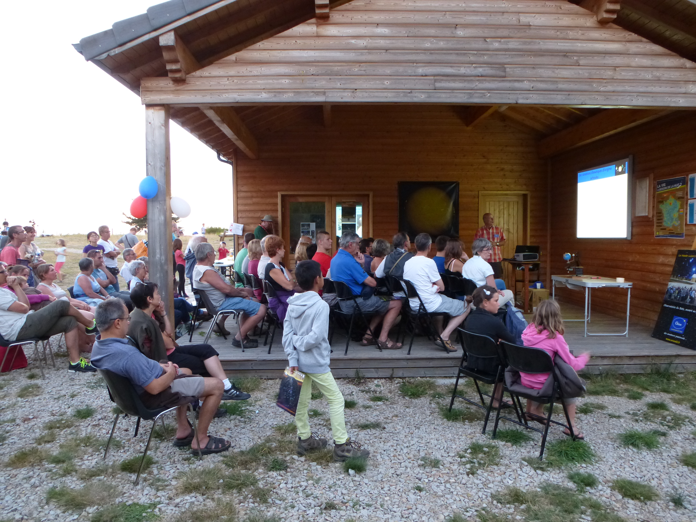
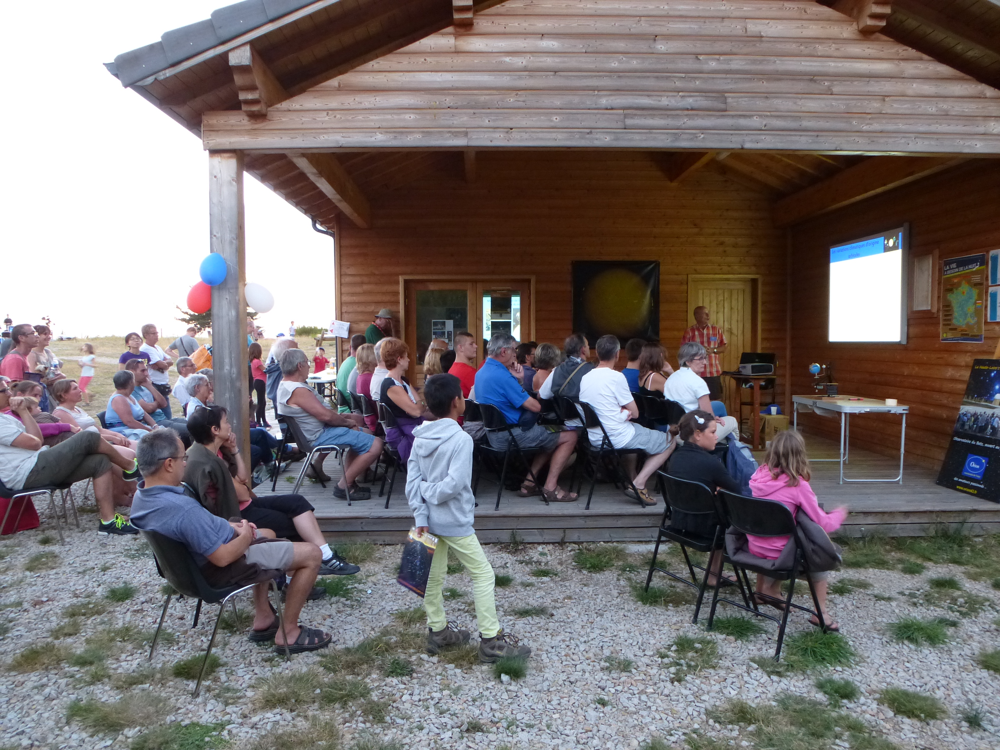

Présentation
Afin de faire partager leurs connaissances, les membres d’Orion organisent régulièrement des conférences sur des sujets variés comme le système solaire, les grands télescopes, les exoplanètes… Ses conférences ont lieu lors des interventions publics de l’été (juillet et août), d’autres conférences sont organisées pour des évènements tels que les éclipses, le transit de mercure …